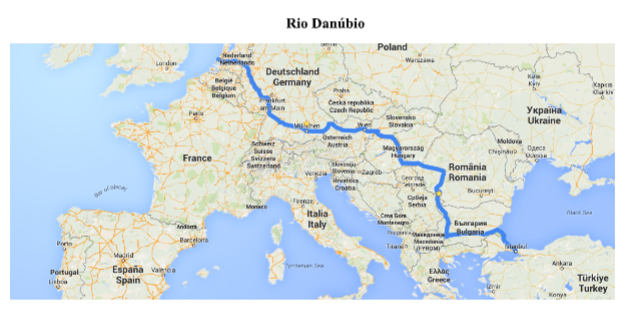

Capítulo 2: Europa e CEI
Questão:A Europa é uma massa continental de quase 10,5 milhões de km², que poderia ser considerada uma península asiática. Seus limites são: ao norte, o oceano Glacial Ártico; ao sul, a Cáucaso e o mar Mediterrâneo, composto pelos mares Adriático, Egeu, Jônico, Negro e Tirreno; a oeste, o oceano Atlântico; e a leste, os montes Urais, o rio Ural e o mar Cáspio. Suas costas são muito acidentadas, o que faz com que um terço do continente seja formado por penínsulas e ilhas. As principais penínsulas são as da Escandinávia, Jutlândia, Ibérica, Italiana e Balcânica. As maiores ilhas são as Britânicas, Islândia, Baleares, Córsega, Sardenha, Sicília, Malta e Creta. De que maneira esses países se relacionam entre si e com o restante do mundo?
Contextualizando – A Construção Civil na EuropaA BATIMAT, realizada no começo de novembro de 2015, em Paris, é referência mundial em termos de inovações voltadas para o segmento de materiais, sistemas e projetos para a construção civil. Bianual, neste ano ela foi mais que um evento para expor produtos. Por causa da COP 21 (Conferência Mundial Sobre o Clima), que acontece de 30 de novembro a 11 de dezembro na capital francesa, a BATIMAT agregou dois importantes seminários à feira: INTERCLIMA + ELEC e IDEOBAIN. O primeiro, criado para debater como as construções podem ser menos agressivas ao clima e como podem gerar conforto térmico; o segundo, para abordar o reúso da água consumida em casa, para fins não potáveis. Os debates abrangeram quatro grandes temas na BATIMAT: “A digitalização da construção”, “O desempenho e a eficiência energética”, “O homem e a construção”, e “Da construção à cidade conectada”. O que eles quiseram mostrar é que não se pode mais projetar uma edificação sem o auxílio de softwares, caso a intenção seja criar prédios sustentáveis. Os palestrantes mostraram que a opção por sistemas construtivos e a escolha dos materiais devem estar de acordo com zonas climáticas, insolação do terreno e perfil do público que irá ocupar o prédio ou a casa. Produtos com soluções pré-fabricadas, capazes de agrupar várias tarefas e economizar tempo e mão de obra, também tendem a ocupar maior espaço nos empreendimentos.
Fonte: https://www.cimentoitambe.com.br/massa-cinzenta/europa-abre-portas-do-futuro- construcao-civil/
Terras temperadasA Europa está localizada totalmente ao norte do Trópico de Câncer e é atravessada no extremo norte pelo Círculo Polar Ártico. Essa posição geográfica a coloca quase inteiramente na Zona Temperada do Norte. A Europa está mais próxima da África no estreito de Gibraltar, entre Espanha e Marrocos. Os seus limites com a Ásia foram definidos convencionalmente, pois ambos fazem parte de um mesmo bloco continental. O leste limita-se com a Ásia por meio dos montes Urais e, ao sul, separa-se desse continente pelo mar Negro e o estreito de Bósforo.
A paisagem característica da Europa é a planície, que recebe nomes variados desde a bacia de Londres até a planície Russa. Ao norte, encontramos as regiões geladas, com clima frio, a aurora boreal e o sol da meia-noite. Os climas temperados (continentais e oceânicos) dominam a maior parte do continente, com florestas de pinheiros e carvalhos. As regiões mais quentes estão no Mediterrâneo, com suas oliveiras, azevinheiras e sobreiros. A Europa é o único continente que não tem desertos, apenas áreas semiáridas na bacia do Mediterrâneo.
Aproximadamente 65% do território europeu é formado pela planície Europeia, que se estende desde o Atlântico até os Urais. Começa na bacia de Londres e recebe vários nomes, conforme se estende para leste: bacia de Paris, planície dos Países Baixos, planície Germânica e planície Russa. Essa planície está rodeada por maciços antigos, de baixas altitudes: montes Gramprans e montes Peninos (Grã-Bretanha), Maciço Central Francês, Maciço da Floresta Negra (Alemanha), Alpes Escandinavos. Ao sul do continente, estão as montanhas jovens: Pirineus, Alpes, Apeninos, Cárpatos, Bálcãs e Cáucaso. O monte Branco (Mont Blanc) é o ponto mais alto da Europa, com 4.810 m.
O maior rio da Europa é o Volga com 3.531 km. Entretanto, os mais importantes, devido às regiões que atravessam, são o Reno e o Danúbio. O Reno (1.326 km) nasce na Suíça, banha França, Alemanha e desemboca no mar do Norte, próximo ao porto de Roterdã, na Holanda. O Danúbio (2.860 km) nasce na Alemanha e desemboca no mar Negro, depois de atravessar dez países. O Danúbio banha capital importante como Viena (Áustria), Belgrado (Iugoslávia) e Budapeste (Hungria). Outros rios têm importância local, como o Pó (Itália), Tejo (Portugal e Espanha), Vístula e Oder (Polônia), Dnieper (Ucrânia), Sena (Paris), Tâmisa (Londres) e Ródano (França).
Para Saber Mais
Assista aos vídeos e faça um resumo ou um esquema em seu caderno, ressaltando as principais características apresentadas